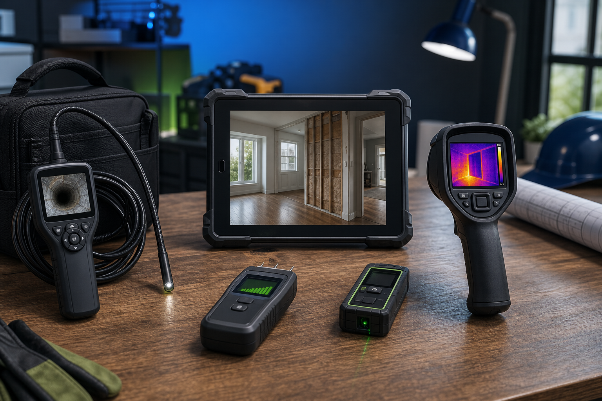

Buying guide
Best Thermal Cameras for HVAC and Home Inspections
Thermal cameras can help contractors find temperature differences, spot possible insulation issues, document HVAC performance concerns, and explain problems visually to customers.
Disclosure: Future product links may be affiliate links. This version uses neutral marketplace research links until affiliate accounts are approved. Thermal images should support professional diagnosis, not replace proper testing, manufacturer guidance, or code/safety requirements.

Visual guideAdding strong product imagery makes the page feel more premium and easier to scan.
Quick recommendation
For most HVAC techs and home service contractors, the best starting point is a phone-connected thermal camera or a compact handheld thermal camera with clear app support, usable thermal resolution, and easy image export.
Go higher-end only if thermal imaging is a frequent part of paid inspections, HVAC diagnostics, energy audits, or premium service documentation.
Thermal imaging is most useful when it makes a customer issue visible fast.
Starter
Phone-connected thermal camera
Compact, lower-cost, and easy to keep in a tool bag. Good for occasional diagnostics and customer visuals.
Best for: first thermal camera tests.
Research on Amazon
Practical
Compact handheld thermal camera
Dedicated device with fewer phone/app dependencies. Better fit for regular field use.
Best for: HVAC and home inspection workflows.
Research on Amazon
Pro
Higher-resolution thermal imager
More expensive, but better for teams using thermal imaging as part of a paid diagnostic service.
Best for: frequent professional diagnostics.
Research on Amazon
Researched models and brands to compare
Current research leads to compare for contractors. Verify resolution, phone compatibility, thermal range, and app/software support before recommending.
- FLIR ONE Edge Pro — wireless phone-connected thermal camera for Android and iOS.
- HIKMICRO Pocket series — compact handheld thermal camera family for regular field use.
- Seek Thermal — phone-connected thermal camera family for budget/mobile workflows.
- FLIR T-series / professional FLIR units — higher-ticket option for frequent HVAC and inspection work.
Features that matter
- Thermal resolution: higher resolution gives more useful detail, but costs more.
- Image export: photos are useful for customer reports, estimates, and before/after documentation.
- Temperature range: verify it fits HVAC and building inspection use cases.
- Phone compatibility: for phone-connected models, check iOS/Android and USB-C/Lightning support.
- Durability: field use needs a tool that can handle jobsite conditions.
- Ease of interpretation: good color palettes and clear displays help explain findings to customers.
HVAC use cases
- Checking air temperature differences around vents and ducts.
- Spotting possible insulation or airflow issues.
- Documenting customer-facing diagnostic visuals.
- Supporting service notes during callbacks or maintenance inspections.
Roofing and home inspection use cases
- Looking for temperature differences that may suggest moisture, insulation, or air leakage concerns.
- Documenting attic or ceiling anomalies before recommending deeper investigation.
- Adding visual evidence to customer explanations and estimate notes.
Mistakes to avoid
- Assuming every thermal anomaly means moisture or damage.
- Buying a cheap model without checking resolution and app support.
- Using thermal images without normal photos and written notes.
- Overpromising what the camera can diagnose by itself.
- Skipping training on how to interpret thermal images correctly.
Buying checklist
- Thermal resolution appropriate for your work.
- Clear image export/report workflow.
- Temperature range that fits HVAC/building inspection use.
- Compatible phone/app or dedicated handheld display.
- Durable case and practical battery life.
- Return policy, warranty, and manufacturer support.
Get the free Contractor Lead Follow-Up Toolkit